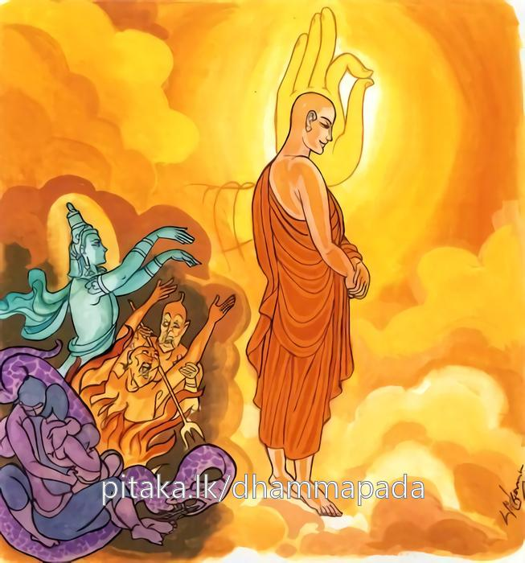

26-29 පින් පව් නැසූ රේවත සාමණේරයන් වහන්සේ
මෙම කතාව ධම්මපද අටුවාවෙන් ද කියවන්න.
යො’ධ පුඤ්ඤඤ්ච පාපඤ්ච උභො සඞ්ගං උපච්චගා
අසොකං විරජං සුද්ධං තමහං බ්රූමි බ්රාහ්මණං.
මෙ ලොවෙහි දී යම් පුද්ගලයෙක් කුශලාකුශල උභය පක්ෂය ම (රහත් මඟ නැණින්) ප්රහීණ කෙළේ ද, රාගාදි සඞ්ගයන් බැහැරැ කෙළේ ද ශෝකයන් ඉක්ම වූ, රාගාදී රජස් දුරැ ලූ (උපක්ලේශාපගමනයෙන්) පිරිසිදු වූ ඒ අශෛක්ෂයා බ්රාහ්මණ යැ යී මම් කියමි.

මෙහි කථා පුවත “ගාමෙ වා යදි වා රඤ්ඤෙ” යි ආ ගාථා වර්ණනායෙහි විස්තර විසින් කියන ලදී. බුදුරජානන් වහන්සේ පූර්වාරාමයෙහි වැඩ වසන දවසෙක භික්ෂූන් වහන්සේලා ධර්ම සභාවට රැස් වී “අනේ! පුදුමයි, හෙරණුන්ගේ ලැබීම, අනේ! පුදුම යි, හෙරණුන්ගේ පිණ, එකලා වූවහු විසින් පන් සියයක් භික්ෂූන්ට පන්සියයක් කුළු ගෙවල් කරණ ලදැ”යි කතා කරන්නට වූහ. භික්ෂූන් කතා කරමින් හුන් තැනට වැඩම කළ බුදුරජානන් වහන්සේ “තමුසේලා කුමක් ගැණ කවරකු ගැණ කතා කරන්නහු දැ?”යි අසා වදාළ කල්හි “රේවත හෙරණුන් ගැණ ය”යි ඔවුහු කීහ. එතැන දී “මා පුතුට පිණෙකුත් නැත, පවෙකුත් නැත, ඒ තැන පින් පව් දෙක ම නසා සිටුනේ ය”යි වදාරා මේ ධර්මදේශනාව කළ සේක.
යොධ පුඤ්ඤාඤ්ච පාපඤ්ච උභො සඞ්ගං උපච්චගා,
අසොකං විරජං සුද්ධං තමහං බ්රෑමි බ්රාහ්මණන්ති.
මෙලොව යමෙක් පිණත් පවත් දෙ ක ද සඞ්ග ද ඉක්මවා ගියේ ද ශෝක රහිත වූ පහ වූ රජස් ඇති පිරිසිදු වූ ඔහු, මම බමුණු යි කියමි.
යො ඉධ පුඤ්ඤං ච පාපං ච උභො සඞ්ගං උපච්චගා = මෙලොව යමෙක් පිණත් පවත් දෙක හා සඞ්ගත් ඉක්මවා ගියේ ද.
අසොකං විරජං සුද්ධං තං අහං බ්රෑමි බ්රාහ්මණං = ශෝක රහිත වූ පහ වූ රජස් ඇති පිරිසිදු වූ ඔහු, මම බමුණු යි කියමි.
‘පුඤ්ඤ’ නම්, දානසීලචේතනා ය. සිත් සතන් පිරිසිදු කරණ බැවිනි. [1] ‘පාප’ නම්, සත්ත්වයා සතර අපායයෙහි හෙලන ප්රාණඝාතාදී දුශ්චරිත ය. [2] ‘සඞ්ග’ නම්, රාගද්වේෂාදීහු ය. සංස්කාරයන් කෙරෙහි ඇලුම් කරවන බැවිනි. [3] මෙ කියූ පින් පව් සඞ්ග රහත් මග නුවණින් ඉක්මවා ගියේ ය, යනු ‘උපච්චගා’ යන්නෙන් කියවේ. ‘උපච්චගා’ යන මෙහි යෙදී සිටි ‘උප’ යනු උපසර්ග යි. සාමීප්ය - සාමර්ත්ථ්ය - ව්යාප්ති - ආචාර්ය්යකරණ - දොෂාඛ්යාන - දානදාක්ෂිණ්ය - වීප්සා - ආරම්භ - පූජා - තද්යොග - අද්ධ්යයන - මරණ යන අරුත්හි හෙන්නේ ය. මෙහි සිටියේ තද්යොගාර්ත්ථයෙහි ය.
මග නුවණින් නැසූ සොක ඇතියේ අසොක. මග නුවණින් නැසූ රාගාදී රජස් ඇතියේ විරජ. එහෙයින් හැමතින් පිරිසිදු වූයේ සුද්ධ. මේ තෙපදයෙන් නිවන කිය වෙන්නේ ය.
රහතුන් වහන්සේලා පින් කරතුදු අවිද්යාදී වූ කෙලෙස් නසා සිටි බැවින් උන්වහන්සේලාට පින් කරණ අවස්ථායෙහි උපදනා සිත් කුසල් සිත් නොව හුදෙක් ක්රියා සිත් ය. විපාක නැත්තේ ය. මේ ක්රියාසිත් ඒ ඒ කෘත්යසිද්ධ කිරීම් වශයෙන් මුත් විපාද ඉපදවීම් වශයෙන් නො පවත්නේ ය. “තං තං කිච්චසාධනවසෙන පවත්තාපකරණමත්තමෙව හොති. තස්මා ක්රියාතිවුත්තං" යනු අටුවා. තව ද මේ ක්රියාසිත් රහතුන් වහන්සේ හා පසේ බුදුරජානන් වහන්සේ පිළිබඳ වේ. “ඉදං චිත්තං අඤ්ඤෙසං අසාදාරණං ඛීණසවස්සෙව පාටිපුග්ගලිකං ඡසු ද්වාරෙසු ලබ්භති” යනු අටුවා. එහෙයින් රහතුන්ට පින් පව් නැතැයි වදාළ සේක.
ධර්මදේශනාවගේ අවසානයෙහි බොහෝ දෙන සෝවන ඵලාදියට පැමිණියාහුය.
රේවත ස්ථවිර වස්තුව නිමි.